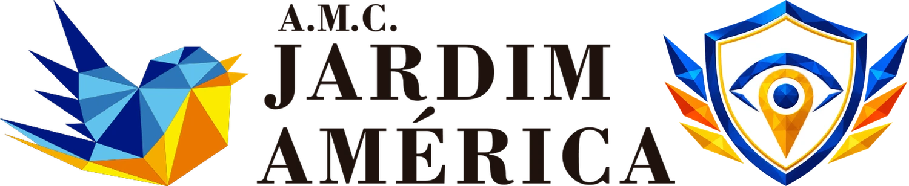

Bússola
Sistema de Navegação da Associação
Carregando o globo…

×
Ruas e quadras
nomes de rua e de bairro e divisas de quadra sobre o satélite
Camadas
Fundo
Medir
Marcar
Bairros
Explorar
Sair
Sobre
3D
+
−
Este mapa precisa de JavaScript e WebGL.